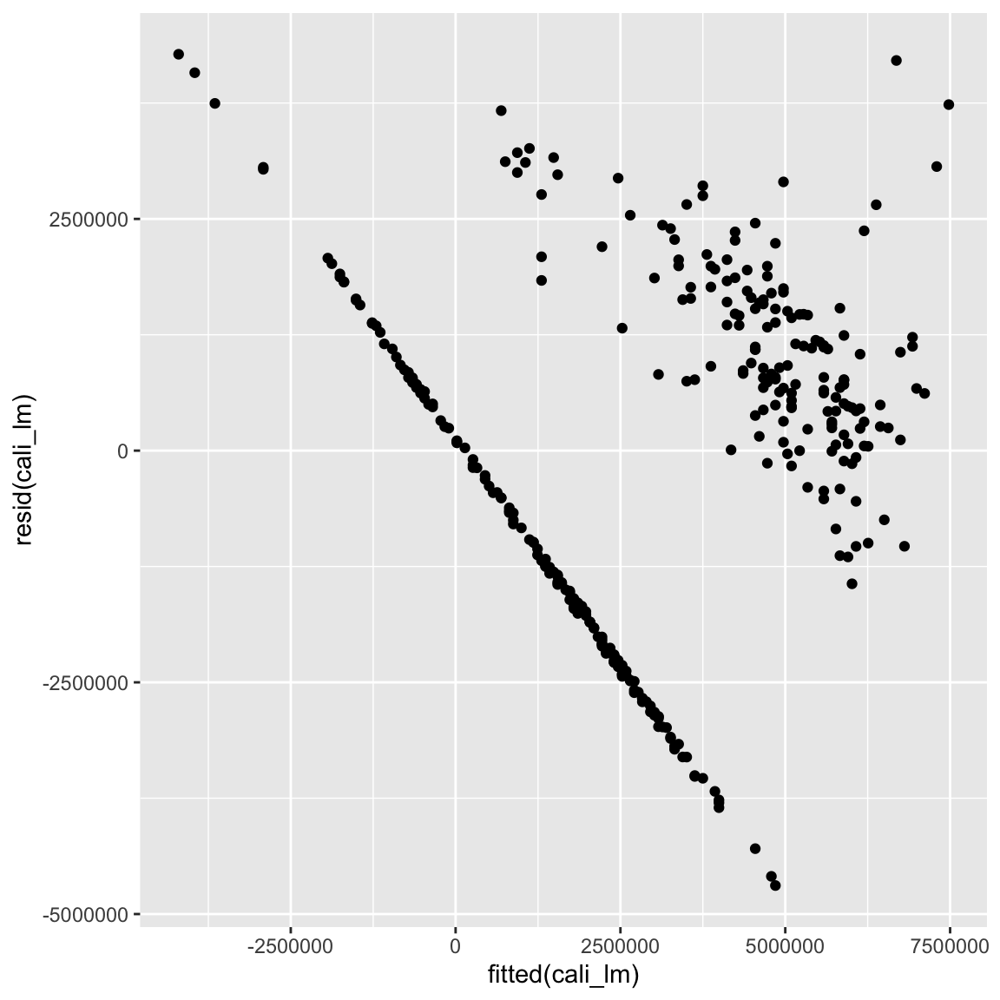
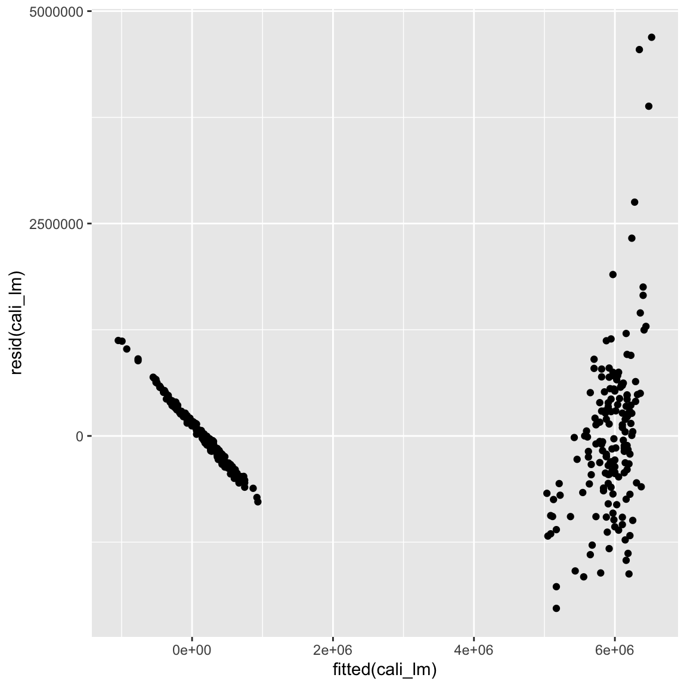
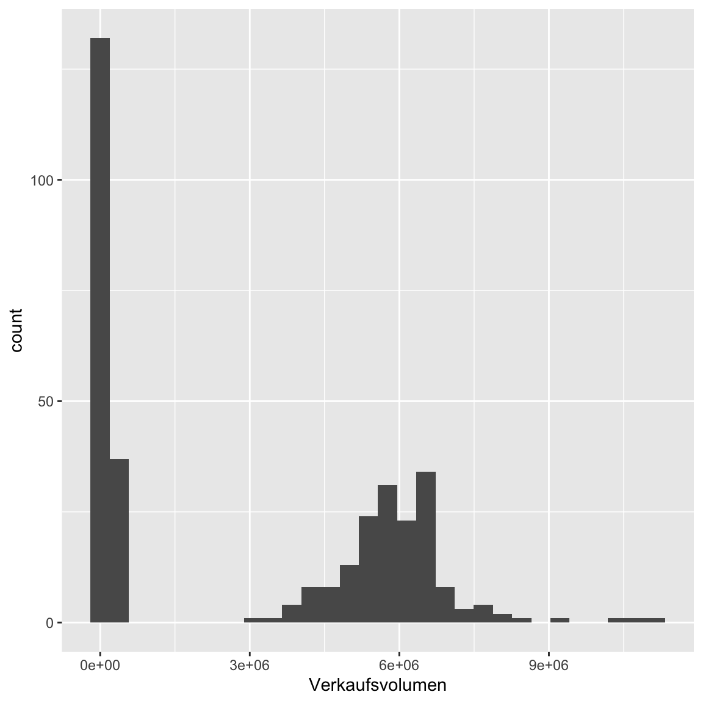
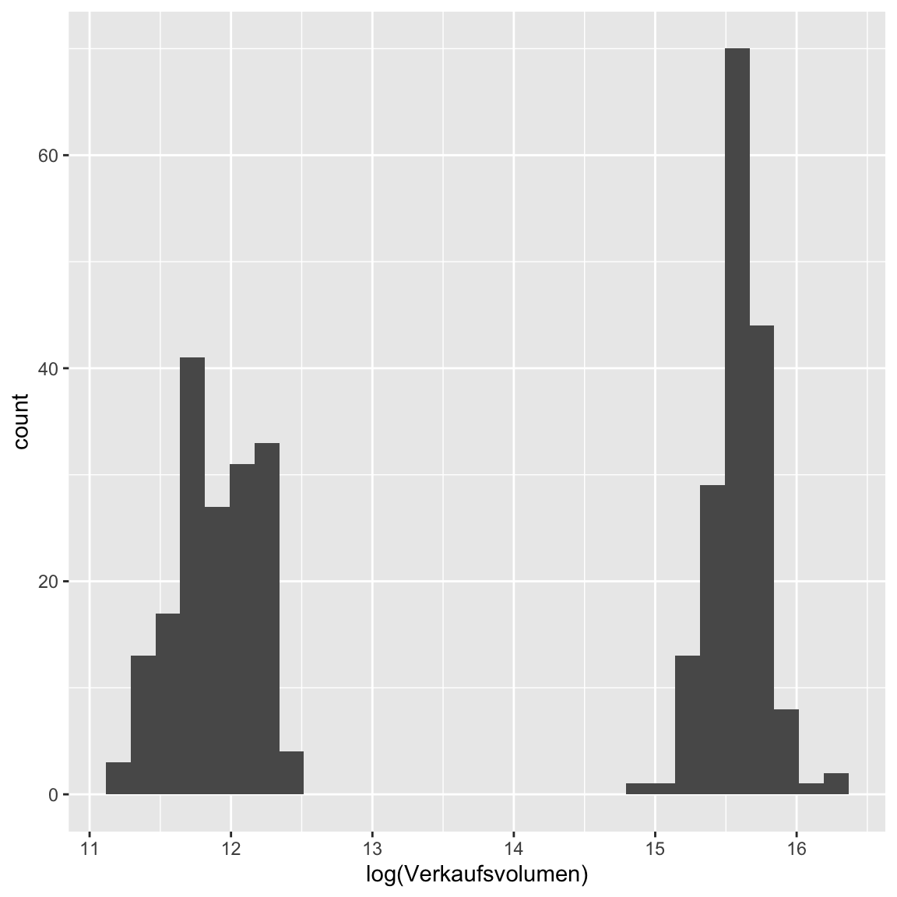
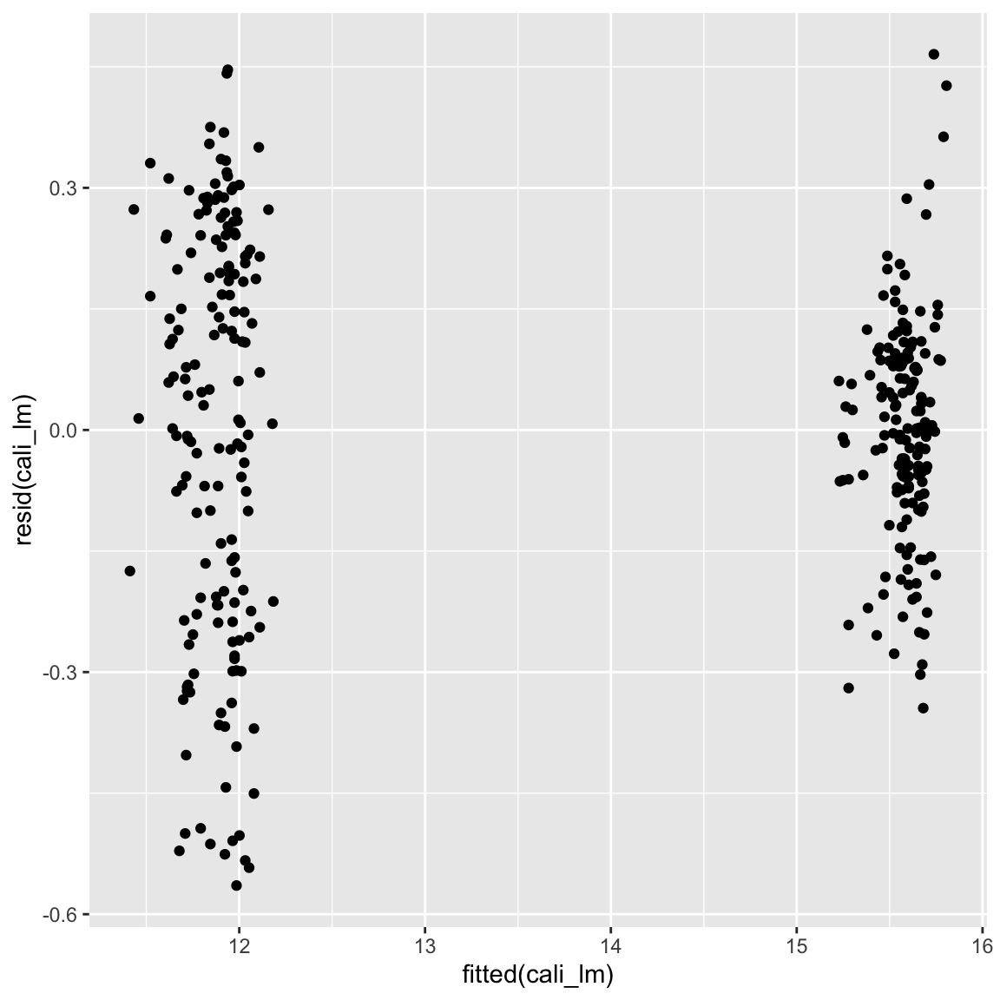
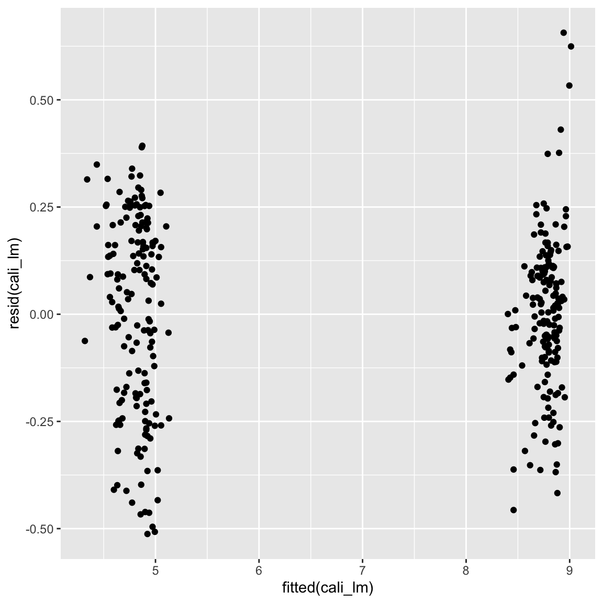
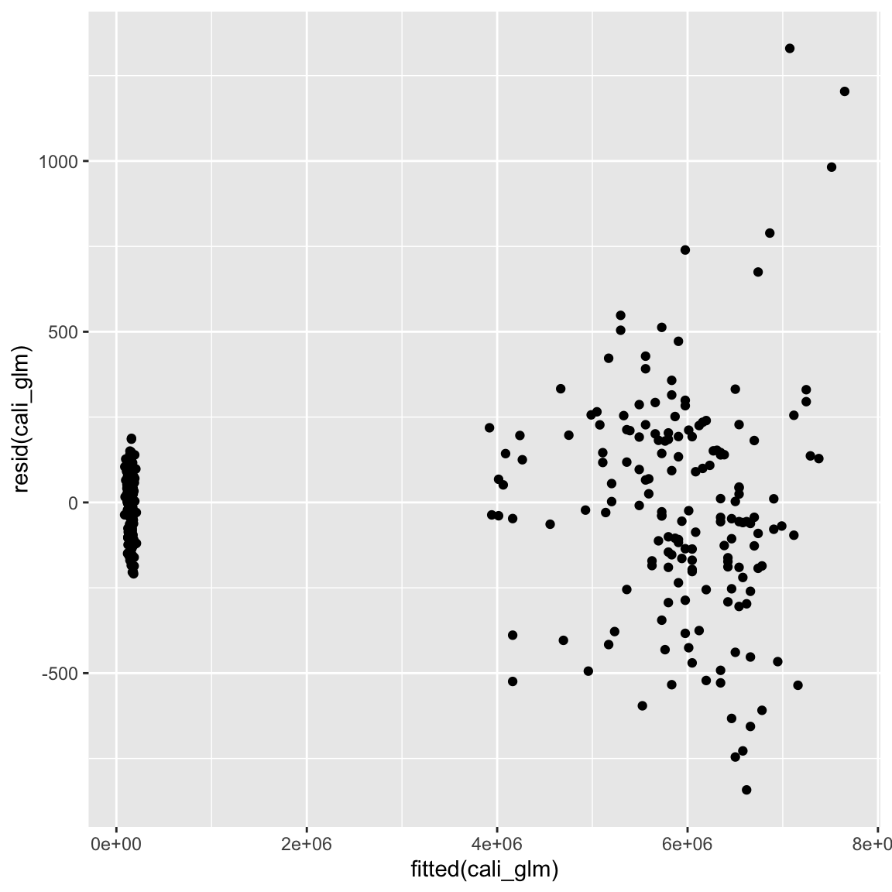

Robuste Statistik
|
Statistik mit R The R Bootcamp |

|

Überblick
Am Ende des Practicals wirst du wissen…
- Wie du die Annahmen der Regression überprüfst.
- Wie du etablierte nicht-parametrische Statistiken implementierst und interpretierst.
- Wie du Bootstrap Analysen rechnest.
Aufgaben
A - Setup
Öffne dein
TheRBootcampR project.Öffne ein neues R Skript. Schreibe deinen Namen, das Datum und “Robuste Statistik Practical” als Kommentare an den Anfang des Skripts.
## NAME
## DATUM
## Robuste Statistik PracticalSpeichere das neue Skript unter dem Namen
robuste_statistik_practical.Rim2_CodeOrdner.Lade die nötigen Pakete. Siehe unten.
# Lade die nötigen Pakete
library(tidyverse)
library(lubridate)
Attaching package: 'lubridate'The following objects are masked from 'package:base':
date, intersect, setdiff, unionlibrary(lme4)Loading required package: Matrix
Attaching package: 'Matrix'The following objects are masked from 'package:tidyr':
expand, pack, unpacklibrary(boot)
library(quantreg)Loading required package: SparseM
Attaching package: 'SparseM'The following object is masked from 'package:base':
backsolvelibrary(Rfit)- Verwende die
read_csv()Funktion umavocadoundavocado_calieinzulesen.
# Lade die Daten
avocado <- read_csv(file = "1_Data/avocado.csv")
avocado_cali <- read_csv(file = "1_Data/avocado_cali.csv")Printe die Datensätze.
Verwende
names(XX),summary(XX), undView(XX)um einen weiteren Überblick über die Daten zu bekommen.Wiederum, führe den Code unten aus um sicherzustellen, dass alle
characterVariablen als Faktoren vorliegen, was den statistischen Modellen hilft kategoriale Variablen richtig zu interpretieren.
# Konvertiere alle character zu factor
avocado <- avocado %>% mutate_if(is.character, factor)
avocado_cali <- avocado_cali %>% mutate_if(is.character, factor)B - Annahmenverletzungen
- In diesem Abschnitt geht es um die Evaluation der Annahmen der
Regression anhand des
avocado_caliDatensatzes, welcher Verkaufsdaten für Avocados in Kalifornien über die letzten drei Jahre enthält. Das Ziel ist es zunächstVerkaufsvolumenüberPreisvorherzusagen mit einer normalen Regression (lm) vorherzusagen.
# Regression Verkausvolumen auf Preis
cali_lm <- lm(formula = YY ~ XX,
data = ZZ)# Regression Verkausvolumen auf Preis
cali_lm <- lm(formula = Verkaufsvolumen ~ Preis,
data = avocado_cali)- Betrachte die
summary()des Modells. IstPreisein guter Prädiktor fürVerkaufsvolumen? Achte auch aufR-squared.
summary(cali_lm)
Call:
lm(formula = Verkaufsvolumen ~ Preis, data = avocado_cali)
Residuals:
Min 1Q Median 3Q Max
-4692333 -1486900 351468 1342770 4276676
Coefficients:
Estimate Std. Error t value Pr(>|t|)
(Intercept) 11577703 371529 31.2 <2e-16 ***
Preis -6115691 256440 -23.9 <2e-16 ***
---
Signif. codes: 0 '***' 0.001 '**' 0.01 '*' 0.05 '.' 0.1 ' ' 1
Residual standard error: 1840000 on 336 degrees of freedom
Multiple R-squared: 0.629, Adjusted R-squared: 0.628
F-statistic: 569 on 1 and 336 DF, p-value: <2e-16Preisist ein signifikanter Prädiktor mit einem sehr extremen t-Wert. Zudem weistR-squaredeinen hohen Wert von62.8%erklärte Varianz auf. Bedeutet dies nun, dass das Modell, welches einen linearen Zusammenhang annimmt, gut den Zusammenhang vonPreisundVerkaufsvolumenbeschreibt? Verwende den Code unten um die Daten und die Regression zu plotten.
# Plotte Modell und Daten
ggplot(avocado_cali, aes(Preis, Verkaufsvolumen)) +
geom_point() + geom_smooth(method = 'lm')- Irgendwie nicht so gut, oder? Überprüfe dies indem du mit dem Code unten die Residuen gegen die gefitteten (vorhergesagten) Werte plottest.
# Residualplot
ggplot(mapping = aes(fitted(cali_lm), resid(cali_lm))) + geom_point()
- Trotz des guten
R-squaredWerts liegen offensichtliche Verletzungen der Annahmen vor: Linearität, Normalität, und Homoskedastizität scheinen nicht zu halten. Ein Grund für diese Verletzungen sind fehlende Variablen. Ergänze das Modell um einen weiteren Prädiktor, nämlichTyp, welcher die Art der Avocado kodiert und plotte erneut Residuen gegen gefittete Werte. Speichere das Modell alscali_lm.
# Regression Verkausvolumen auf Preis & Typ
cali_lm <- lm(formula = XX ~ XX + XX, data = XX)
ggplot(mapping = aes(fitted(XX), resid(XX))) + geom_point()# Regression Verkausvolumen auf Preis & Typ
cali_lm <- lm(Verkaufsvolumen ~ Preis + Typ, data = avocado_cali)
ggplot(mapping = aes(fitted(cali_lm), resid(cali_lm))) + geom_point()
- Das hat geholfen! Aber die Sache sieht immer noch nicht ganz rund
aus. Ein weiteres Problem existiert in der sehr schiefen Verteilung von
Verkaufsvolumen. Es gibt nun mehrere Wege damit umzugehen. 1) Transformation vonVerkaufsvolumenz.B. mitlog(), 2) Verwendung der alternativen VariableVerkaufsvolumen_index, oder 3) die Modellierung mit einer passenden Verteilung. Probiere alle drei aus. Beginne mit 1), der Transformation. Überprüfe zunächst mit dem Template wie sich die Schiefe darstellt und wie sie sich durchlog()verändert.
# Histogramm Verkaufsvolumen
ggplot(avocado_cali, aes(Verkaufsvolumen)) + geom_histogram()`stat_bin()` using `bins = 30`. Pick better value with `binwidth`.
ggplot(avocado_cali, aes(log(Verkaufsvolumen))) + geom_histogram()`stat_bin()` using `bins = 30`. Pick better value with `binwidth`.
- Sieht besser aus, oder? Zumindest etwas symmetrischer. Rechne nun
eine Regression mit
log(Verkaufsvolumen)als Kriterium und kreiere den typischen Residualplot.
# Regression Verkausvolumen auf Preis & Typ
cali_lm <- lm(formula = log(XX) ~ XX + XX, data = XX)
ggplot(mapping = aes(fitted(XX), resid(XX))) + geom_point()# Regression Verkausvolumen auf Preis & Typ
cali_lm <- lm(log(Verkaufsvolumen) ~ Preis + Typ, data = avocado_cali)
ggplot(mapping = aes(fitted(cali_lm), resid(cali_lm))) + geom_point()
- Die Punkte streuen nun etwas gleichmässiger um die Null-Gerade. Ganz
ideal ist das Bild aber immer noch nicht, denn offensichtlich ist die
Varianz der Residuen im unteren Bereich höher als im oberen Bereich.
Ergo ist Homoskedastizität verletzt. Rechne nun eine Regression mit
Verkaufsvolumen_index(ohnelog()) und überprüfe, ob das vielleicht die verbleibenden Probleme löst.
# Regression Verkausvolumen auf Preis & Typ
cali_lm <- lm(formula = XX ~ XX + XX, data = XX)
ggplot(mapping = aes(fitted(XX), resid(XX))) + geom_point()# Regression Verkausvolumen auf Preis & Typ
cali_lm <- lm(Verkaufsvolumen_index ~ Preis + Typ, data = avocado_cali)
ggplot(mapping = aes(fitted(cali_lm), resid(cali_lm))) + geom_point()
- Vielleicht ist jetzt die Varianz etwas ausgeglichener, ideal sieht es aber immer noch nicht aus. Ganz perfekt ist das aber immer noch nicht. Du kannst dies mit dem Code unten, welcher die Standardabweichung separat für die beiden Punktwolken bestimmt, überprüfen.
# Regression Verkausvolumen auf Preis & Typ
tapply(resid(cali_lm), fitted(cali_lm) > 7, sd)FALSE TRUE
0.229 0.178 - Versuche nun als letztes die Poisson Verteilung mit
Verkaufszahlen(einer Häufigkeitsvariable) als Kriterium. Achtung: Die Warnungen könnt ihr ignorieren.
# Regression Verkausvolumen auf Preis & Typ
cali_glm <- glm(formula = XX ~ XX + XX, data = XX, family = 'XX')
ggplot(mapping = aes(fitted(XX), resid(XX))) + geom_point()# Regression Verkausvolumen auf Preis & Typ
cali_glm <- glm(Verkaufsvolumen ~ Preis + Typ, data = avocado_cali, family = 'poisson')
ggplot(mapping = aes(fitted(cali_glm), resid(cali_glm))) + geom_point()
- Man könnte annehmen dies hätte die Angelegenheit weiter verschlechtert. Tatsächlich ist dies aber nicht so. Die Poisson-Regression hat andere Annahmen, als die normale Regression. Die normale Regression nimmt an, dass die Varianz konstant um die Regressionsgerade verteilt ist, die Poisson-Regression dagegen, dass die Varianz mit zunehmendem vorhergesagtem Wert ansteigt. Dies entspricht in diesem Fall exakt dem beobachteten Plot, womit wir belegt hätten, dass man Häufigkeitsverteilungen vielleicht doch am besten mit der davor vorgesehenen Verteilung modelliert.
C - Nicht-parametrische Tests
- In diesem Abschnitt analysierst du die Veränderung im
Verkausvolumenüber die Jahre 2016 und 2017. Führe zunächst den Code unten aus um zwei vergleichbare Datensätze für die beiden Jahre zu kreieren.
# Jahr 2016
avocado_cali_2016 <- avocado_cali %>%
filter(year(Datum) == 2016)
# Jajr 2017 mit Wochen gematched
avocado_cali_2017 <- avocado_cali %>%
filter(year(Datum) == 2017,
week(Datum) %in% week(avocado_cali_2016$Datum))- Vergleiche nun mit einem
t.test()dasVerkaufsvolumenund denVerkaufsvolumen_indexzwischen den beiden Jahren. Setze dabeipaired = TRUEum zu berücksichtigen, dass es sich hier um abhängige Daten handelt. Siehe Template.
# Verkaufsvolumen 2016 vs 2017
t.test(avocado_cali_2016$XX,
avocado_cali_2017$XX, paired = TRUE)
# Verkaufsvolumen-Index 2016 vs 2017
t.test(avocado_cali_2016$XX,
avocado_cali_2017$XX, paired = TRUE)# Verkaufsvolumen 2016 vs 2017
t.test(avocado_cali_2016$Verkaufsvolumen,
avocado_cali_2017$Verkaufsvolumen, paired = TRUE)
Paired t-test
data: avocado_cali_2016$Verkaufsvolumen and avocado_cali_2017$Verkaufsvolumen
t = 2, df = 103, p-value = 0.05
alternative hypothesis: true difference in means is not equal to 0
95 percent confidence interval:
-3290 307840
sample estimates:
mean of the differences
152275 # Verkaufsvolumen-Index 2016 vs 2017
t.test(avocado_cali_2016$Verkaufsvolumen_index,
avocado_cali_2017$Verkaufsvolumen_index, paired = TRUE)
Paired t-test
data: avocado_cali_2016$Verkaufsvolumen_index and avocado_cali_2017$Verkaufsvolumen_index
t = 2, df = 103, p-value = 0.03
alternative hypothesis: true difference in means is not equal to 0
95 percent confidence interval:
0.0056 0.0965
sample estimates:
mean of the differences
0.051 Verkaufsvolumenzeigte keinen signifikanten Unterschied,Verkaufsvolumen_indexdagegen schon. Dies ist wiederum auf die Schiefe inVerkaufsvolumenzurückzuführen. Vergleiche nun wie sich ein robusterwilcox.test()in den beiden Fällen schlägt.
# Verkaufsvolumen 2016 vs 2017
wilcox.test(avocado_cali_2016$XX,
avocado_cali_2017$XX, paired = TRUE)
# Verkaufsvolumen-Index 2016 vs 2017
wilcox.test(avocado_cali_2016$XX,
avocado_cali_2017$XX, paired = TRUE)# Verkaufsvolumen 2016 vs 2017
wilcox.test(avocado_cali_2016$Verkaufsvolumen,
avocado_cali_2017$Verkaufsvolumen, paired = TRUE)
Wilcoxon signed rank test with continuity correction
data: avocado_cali_2016$Verkaufsvolumen and avocado_cali_2017$Verkaufsvolumen
V = 3491, p-value = 0.01
alternative hypothesis: true location shift is not equal to 0# Verkaufsvolumen-Index 2016 vs 2017
wilcox.test(avocado_cali_2016$Verkaufsvolumen_index,
avocado_cali_2017$Verkaufsvolumen_index, paired = TRUE)
Wilcoxon signed rank test with continuity correction
data: avocado_cali_2016$Verkaufsvolumen_index and avocado_cali_2017$Verkaufsvolumen_index
V = 3474, p-value = 0.02
alternative hypothesis: true location shift is not equal to 0- Nun ist in beiden Fällen der Unterschied signifikant, was in der Tat für einen robusten Unterschied spricht. Ein einfacher weg dies noch weiter zu überprüfen ist der Vorzeichentest. Nutze das Template unten, um den Unterschied auch noch mit diesem Test zu überprüfen.
# Verkaufsvolumen 2016 vs 2017
# Vorzeichentest Vorbereitung
signs <- avocado_cali_2017$XX > avocado_cali_2016$XX
n_plus <- sum(signs)
n <- length(signs)
# p-Wert für Vorzeichentest
pbinom(q = n_plus, size = n, prob = .5)
# Verkaufsvolumen-Index 2016 vs 2017
# Vorzeichentest Vorbereitung
signs <- avocado_cali_2017$XX > avocado_cali_2016$XX
n_plus <- sum(signs)
n <- length(signs)
# p-Wert für Vorzeichentest
pbinom(q = n_plus, size = n, prob = .5)# Verkaufsvolumen 2016 vs 2017
# Vorzeichentest Vorbereitung
signs <- avocado_cali_2017$Verkaufsvolumen > avocado_cali_2016$Verkaufsvolumen
n_plus <- sum(signs)
n <- length(signs)
# p-Wert für Vorzeichentest
pbinom(q = n_plus, size = n, prob = .5)[1] 0.0475# Verkaufsvolumen-Index 2016 vs 2017
# Vorzeichentest Vorbereitung
signs <- avocado_cali_2017$Verkaufsvolumen_index > avocado_cali_2016$Verkaufsvolumen_index
n_plus <- sum(signs)
n <- length(signs)
# p-Wert für Vorzeichentest
pbinom(q = n_plus, size = n, prob = .5)[1] 0.0475- Auch hier zwei signifikante Ergebnisse. Nun kannst du langsam tatsächlich davon ausgehen, dass der Verkauf im Jahre 2017 gegenüber 2016 leicht zurück gegangen ist.
D - Robust Regression
- Begib dich noch einmal zurück zur Vorhersage des
VerkaufsvolumendurchPreisundTyp. Ein weiterer Weg gegenüber den bisher eingeschlagenen um mit potentiellen Verletzungen der Regression umzugehen sind robuste Regressionen. Rechne zunächst noch einmal das ursprüngliche Modell mit einer normalen Regression.
# Regression Verkausvolumen auf Preis
cali_lm <- lm(formula = YY ~ XX + XX,
data = ZZ)# Regression Verkausvolumen auf Preis
cali_lm <- lm(formula = Verkaufsvolumen ~ Preis + Typ,
data = avocado_cali)- Nun verwende das Template unten um zwei alternative Modelle zu
rechnen. Eine Quantil-basierte Regression mit
rq()(quantregPaket) und eine Rang-basierte Regression mitrfit()(RfitPaket).
# Quantil-basierte Regression
cali_rq <- rq(formula = YY ~ XX + XX,
data = ZZ)
# Rang-basierte Regression
cali_rfit <- rfit(formula = YY ~ XX + XX,
data = ZZ)# Quantil-basierte Regression
cali_rq <- rq(formula = Verkaufsvolumen ~ Preis + Typ,
data = avocado_cali)
# Rang-basierte Regression
cali_rfit <- rfit(formula = Verkaufsvolumen ~ Preis + Typ,
data = avocado_cali)- Vergleiche die
summary()der drei Modelle. Welche Unterschiede und Gemeinsamkeiten fallen dir auf?
# regular regression
summary(cali_lm)
Call:
lm(formula = Verkaufsvolumen ~ Preis + Typ, data = avocado_cali)
Residuals:
Min 1Q Median 3Q Max
-2029523 -338620 -65747 347099 4692280
Coefficients:
Estimate Std. Error t value Pr(>|t|)
(Intercept) 7418161 181045 40.97 < 2e-16 ***
Preis -1338574 155354 -8.62 2.8e-16 ***
Typorganic -5012181 121165 -41.37 < 2e-16 ***
---
Signif. codes: 0 '***' 0.001 '**' 0.01 '*' 0.05 '.' 0.1 ' ' 1
Residual standard error: 745000 on 335 degrees of freedom
Multiple R-squared: 0.939, Adjusted R-squared: 0.939
F-statistic: 2.59e+03 on 2 and 335 DF, p-value: <2e-16# quantile regression
summary(cali_rq)
Call: rq(formula = Verkaufsvolumen ~ Preis + Typ, data = avocado_cali)
tau: [1] 0.5
Coefficients:
coefficients lower bd upper bd
(Intercept) 6.06e+06 5.68e+06 1.80e+308
Preis -1.54e+05 -3.16e+05 -4.18e+04
Typorganic -5.64e+06 -6.39e+06 -5.41e+06# rank-based regression
summary(cali_rfit)Call:
rfit.default(formula = Verkaufsvolumen ~ Preis + Typ, data = avocado_cali)
Coefficients:
Estimate Std. Error t.value p.value
(Intercept) 6364261 79959 79.59 < 2e-16 ***
Preis -455900 68628 -6.64 1.2e-10 ***
Typorganic -5453944 53525 -101.89 < 2e-16 ***
---
Signif. codes: 0 '***' 0.001 '**' 0.01 '*' 0.05 '.' 0.1 ' ' 1
Multiple R-squared (Robust): 0.93
Reduction in Dispersion Test: 2231 p-value: 0 - Die Summaries sind zunächst einmal nicht konsistent im Aufbau. Die Quantilregression liefert nur Konfidenzintervalle, was wir in der nächsten Session behandeln werden, entsprechend können wir keine p- oder t-Werte vergleichen. Du kannst aber zumindest die Gewichte vergleichen. Hier solltest du erkannt haben, dass die Gewichte der beiden robusten Regression deutlich näher aneinander sind und insbesondere das Gewicht des Preises als kleiner einschätzen, als dies die normale Regression tut. Dies ist ein Indiz dafür, dass der Einfluss des Preises ggf. von der normalen Regression überschätzt wurde.
E - Bootstrap
- Der Bootstrap ist ein kaum zu überschätzendes Tool in der Statistik,
dass praktisch jeden statistischen Test ersetzen kann. Verwende ihn um
Standardfehler für übliche Regression von
VerkaufsvolumenaufPreisundTypzu bestimmen. Dazu haben wir für dich schon die bootstrap Funktion geschrieben die wir im nächsten Schritt in dieboot-Funktion stecken können. Versuche zunächst jedoch nachzuvollziehen was unsereboot_lmFunktion tut.
# Bootstrap Funktion für lm
boot_lm <- function(data, indices, formula){
data <- data[indices,] # Bootstrap sample
data_lm <- lm(formula = formula,
data = data)
coefficients(data_lm)
}- Nun können wir die Funktion verwenden um wiederholt Regressionen für Bootstrap samples der Daten zu bestimmen. Siehe
# Lasse Bootstrap laufen
cali_boot<- boot(data = XX, # Der Datensatz
statistic = XX, # Die Funktion
formula = XX ~ XX + XX, # Die Modellgleichung
R = 1000) # Die Anzahl der Ziehungen# Lasse Bootstrap laufen
cali_boot<- boot(data = avocado_cali,
statistic = boot_lm,
formula = Verkaufsvolumen ~ Preis + Typ,
R = 1000) - Printe das
cali_bootund evaluiere das Ergebnis. Die Spalteoriginalenthält die Gewichte für den gesamten Datensatz. Die Spaltebiasden Unterschied zwischen dem Mittel der Gewichte über die Bootstrap Samples und der Spalteoriginal. Diese sollte möglichst klein sein. Die Spaltestd. errorenthält das Ergebnis von Interesse: den über Bootstrap geschätzten Standardfehler der Gewichte.
# Zeige Bootstrap Ergebnisse
cali_boot
ORDINARY NONPARAMETRIC BOOTSTRAP
Call:
boot(data = avocado_cali, statistic = boot_lm, R = 1000, formula = Verkaufsvolumen ~
Preis + Typ)
Bootstrap Statistics :
original bias std. error
t1* 7418161 -10142 267313
t2* -1338574 7983 211733
t3* -5012181 -3101 121897- Das Ergebnis des Bootstrap kannst du nun einfach über eine
z-Verteilung testen a la
z = b / se, d.h., das Gewicht geteilt durch den Standardfehler folgt der z-Verteilung. Der Code unten sieht die relevanten Werte aus dem Objekt und berechnet die z-Werte für Intercept und die zwei Gewichte.
# Berechne z-Werte
cali_boot$t0[1] / sd(cali_boot$t[,1])(Intercept)
27.8 cali_boot$t0[2] / sd(cali_boot$t[,2])Preis
-6.32 cali_boot$t0[3] / sd(cali_boot$t[,3])Typorganic
-41.1 - Zum Abschluss vergleiche die durch Bootstrap ermittelten z-Werte mit den t-Werten aus der normalen Regression. Wisse dass zumindest theoretisch t-Werte mit vielen Freiheitsgraden praktisch identisch mit z-Werte seien sollten. Da in den Standardfehler der normalen Regression jedoch Annahmen einfliessen, müssen die Werte nicht identisch sein.
# Normale Regression
summary(lm(Verkaufsvolumen ~ Preis + Typ, avocado_cali))
Call:
lm(formula = Verkaufsvolumen ~ Preis + Typ, data = avocado_cali)
Residuals:
Min 1Q Median 3Q Max
-2029523 -338620 -65747 347099 4692280
Coefficients:
Estimate Std. Error t value Pr(>|t|)
(Intercept) 7418161 181045 40.97 < 2e-16 ***
Preis -1338574 155354 -8.62 2.8e-16 ***
Typorganic -5012181 121165 -41.37 < 2e-16 ***
---
Signif. codes: 0 '***' 0.001 '**' 0.01 '*' 0.05 '.' 0.1 ' ' 1
Residual standard error: 745000 on 335 degrees of freedom
Multiple R-squared: 0.939, Adjusted R-squared: 0.939
F-statistic: 2.59e+03 on 2 and 335 DF, p-value: <2e-16Beispiele
library(tidyverse)
# Normale regression ----------------
# Modell
m <- lm(formula = hwy ~ displ,
data = mpg)
# Evaluiere Modell
summary(m) # Summary
fitted(m) # gefittete Werte
resid(m) # Residuen
# Residualplot
plot(fitted(m), resid(m))
# non-parametric tests ----------------
# Teile Daten
mpg_suv <- mpg %>% filter(class == 'suv')
mpg_compact <- mpg %>% filter(class == 'compact')
# Wilcoxon
wilcoxon.test(mpg_suv$hwy, mpg_compact$hwy)
# Robuste Regression ----------------
library(quantreg)
library(Rfit)
# Quantil Regression
m_q <- rq(hwy ~ displ, data = mpg)
# Rang Regression
m_rb <- rfit(hwy ~ displ, data = mpg)Datensätze
| File | Zeilen | Spalten |
|---|---|---|
| avocado.csv | 17573 | 16 |
| avocado_cali.csv | 338 | 16 |
Die Datensätze entstammen der Hass Avocado Board Webseite und enthalten wochenweise Avocado Verkaufsvolumina von April 2015 bis Mai 2018 für verschiedene Regionen der USA. Der kleinere Datensatz enthält nur die Daten für Kalifornien.
avocado.csv & avocado_cali.csv
| Name | Description |
|---|---|
Verkaufsvolumen |
Das totale Verkaufsvolumen für Avocados in einer Woche. |
Verkaufsvolumen_index |
Ein Index von 0 bis 10 der das Verkaufsvolumen repräsentiert. |
Preis |
Der durchschnittliche Preis einer Avocado. |
Typ |
Der Typ der Avocado: “conventional” oder “organic”. |
Temparatur |
Die regionale Temperatur. |
Temperatur_USA |
Die landesweite Temperatur |
Luftfeuchtigkeit |
Die regionale Luftfeuchtigkeit. |
Luftfeuchtigkeit_USA |
Die landesweite Luftfeuchtigkeit_USA. |
Niederschlag |
Der regionale Niederschlag. |
Niederschlag_USA |
Der landesweite Niederschlag. |
Jahr |
Jahr. |
Jahreszeit |
Jahreszeit. |
Datum |
Datum. |
Region |
Region. |
Längengrad |
Längengrad. |
Breitengrad |
Breitengrad. |
Funktionen
Pakete
| Package | Installation |
|---|---|
tidyverse |
install.packages("tidyverse") |
lubridate |
install.packages("lubridate") |
quantreg |
install.packages("quantreg") |
boot |
install.packages("boot") |
Rfit |
install.packages("Rfit") |
lme4 |
install.packages("lme4") |
rsq |
install.packages("rsq") |
Funktionen
| Function | Package | Description |
|---|---|---|
lm, glm |
stats |
Regressionsmodelle. |
summary |
base |
Modellergebnisse |
fitted, resid |
stats |
Extrahiere gefittete Werte und Residuen. |
rq |
quantreg |
Quantil-Regression. |
rfit |
Rfit |
Rangregression. |
wilcox.test |
stats |
Wilcoxon-Test. |
pbinom |
stats |
Kumulative Binomialverteilung (für den Vorzeichentest). |